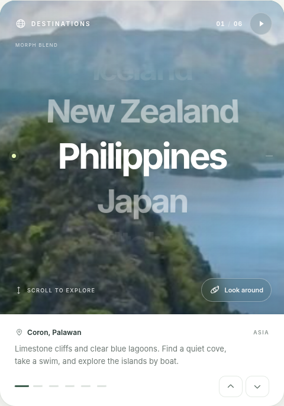

Same card.
Morph + liquid.
The working HTML, source code, reference captures, asset contracts and implementation briefs for rebuilding the component in Uno Platform. Preserve the layout and interactions. Build the photo effects underneath real XAML text and controls.
Extract the complete ZIP before opening this index. The photo prototype loads online. The offline test uses labeled synthetic textures, never substitute destination photos.

Start the rebuild
Exercise the working card
Compare both effects on the same pair. Replay, scrub, loop in both directions and try Look around. The approved HTML is the behavior reference.
Read the briefs and fetch photos
Confirm targets, renderer and fonts. Preserve the original source identities, inspect the rights notes and package local photographs before offline acceptance.
Give the agent the kickoff
Begin with a two-photo shader spike. Then build the reusable XAML card, picker, media state and camera. Do not substitute a WebView or a static mockup.
Briefs and decisions
Source material

Prepare the original photos
Run from the extracted handoff folder on a connected machine. No replacements are searched for or silently used. An offline build stops if any original is missing.
python -m pip install Pillow python tools/fetch_assets.py python tools/build_prototype.py --offline python tools/validate_package.py --require-photos
The complete offline result is prototype/approved-offline.html. Copy the fetched JPEGs into the Uno app as described in the manifest.